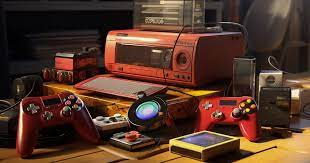
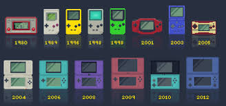
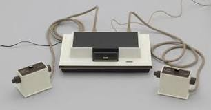

A lo largo del tiempo las consolas de videojuegos han evolucionado gracias a los avances tecnologicos . A pesar de que ahora son muy comunes antes no era asi era algo novedoso y que se veia poco.
Con el avance de la tecnologia las consolas han sido capaces de ser mas eficientes y han evolucionado de manera que pueden soportar juegos de mejor calidad y tambien se han desarrollado consolas portatiles que permiten al ser ligeras desplazarlas de un lugar a otro y darles uso en todas partes
Quiero hacer una mencion especifica a la primera consola que no pertenece a ninguna de las marcas de las que se habla en esta web su nombre es la Magnavox Odyssey
